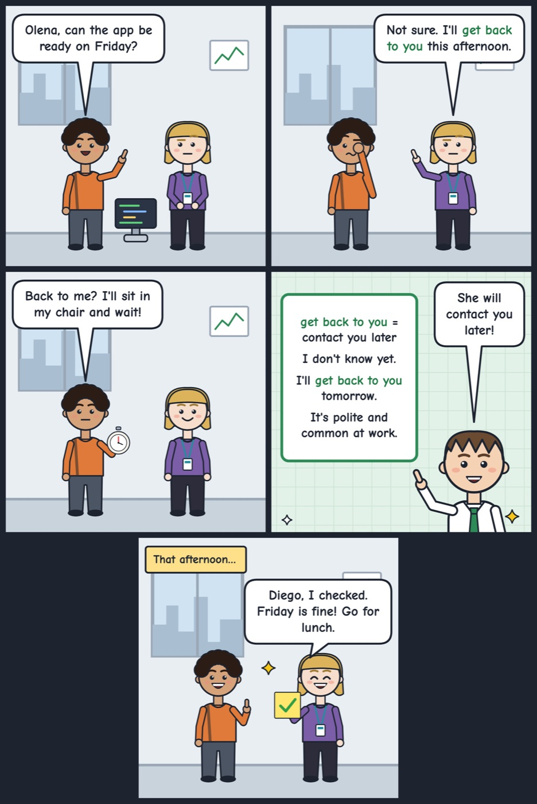

get back to you
To contact someone later with an answer or more information.
I don't know the price yet. I'll get back to you tomorrow.
Tip: Use 'get back to you (with/about something)' when you can't answer now; it promises a later reply, so say when ('by Friday', 'this afternoon') to sound reliable.
Hear it in conversation
Workbook
1. What does it mean?
In this conversation, what does "get back to you" mean?
2. Fill the gap
I'm not sure the shop has my size in stock, but I'll call them and this evening.
3. Choose the best reply
Olena: Do you know if the flight is direct? I need to tell my family.
4. Your turn: speak
Tell me about a time you couldn't answer someone's question straight away. What did you do?
Show an example answer
Last month a colleague asked me whether I could take over a project, and I wasn't sure about my schedule. I told her I'd get back to you by the end of the day, and then I checked my calendar and talked to my manager. In the end I said yes, and she was happy that I gave her a clear answer quickly.
Answer key: get back to you
- 1. D. Reply to Amira later, after checking something
- 2. get back to you
- 3. C. Not yet, I'll check the booking and get back to you in an hour.
- 4. Example: Last month a colleague asked me whether I could take over a project, and I wasn't sure about my schedule. I told her I'd get back to you by the end of the day, and then I checked my calendar and talked to my manager. In the end I said yes, and she was happy that I gave her a clear answer quickly.
See it in a comic
